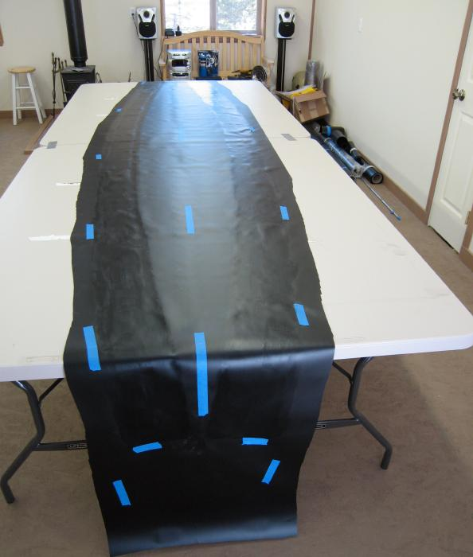

| Sonnet ( Hull Skin) | Menu Previous Page Next Page |
|

Remove the skin . It's not necessary to enclose the entire gluing area with tape when gluing.
The tape as seen is sufficient to provide a pattern for applying glue. Connecting the tape with pencil lines helps also. Brush the sponson sleeves with 1 coat of vinyl cement at this time. |
|